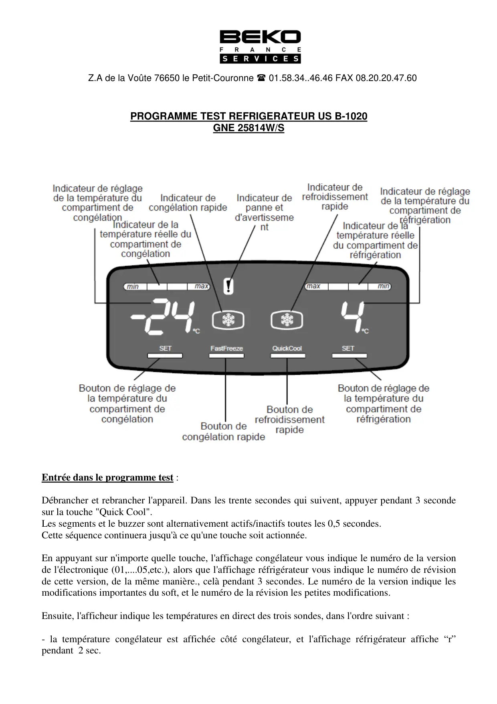
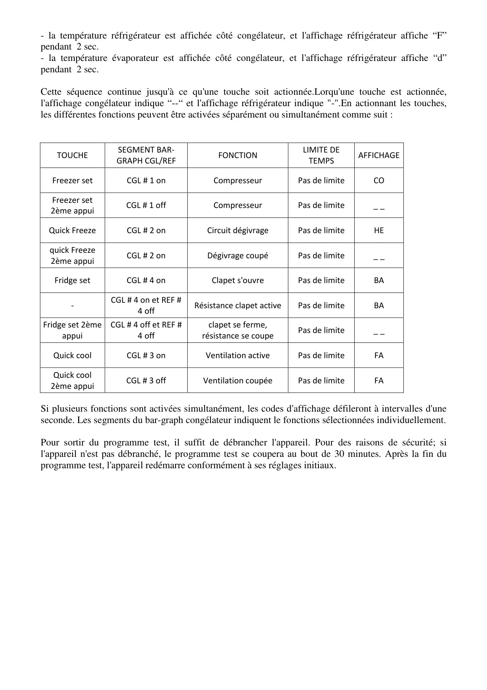
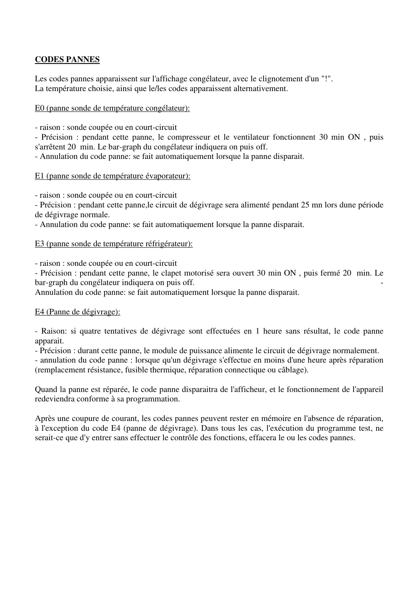

ProgrTest B1020 GNE25814 Fr

Z.A de la Voûte 76650 le Petit-Couronne 01.58.34..46.46 FAX 08.20.20.47.60PROGRAMME TEST REFRIGERATEUR US B-1020GNE 25814W/SEntrée dans le programme test :Débrancher et rebrancher l'appareil. Dans les trente secondes qui suivent, appuyer pendant 3 secondesur la touche "Quick Cool".Les segments et le buzzer sont alternativement actifs/inactifs toutes les 0,5 secondes.Cette séquence continuera jusqu'à ce qu'une touche soit actionnée.En appuyant sur n'importe quelle touche, l'affichage congélateur vous indique le numéro de la versionde l'électronique (01,....05,etc.), alors que l'affichage réfrigérateur vous indique le numéro de révisionde cette version, de la même manière., celà pendant 3 secondes. Le numéro de la version indique lesmodifications importantes du soft, et le numéro de la révision les petites modifications.Ensuite, l'afficheur indique les températures en direct des trois sondes, dans l'ordre suivant :- la température congélateur est affichée côté congélateur, et l'affichage réfrigérateur affiche “r”pendant 2 sec.
1 / 3
- la température réfrigérateur est affichée côté congélateur, et l'affichage réfrigérateur affiche “F”pendant 2 sec.- la température évaporateur est affichée côté congélateur, et l'affichage réfrigérateur affiche “d”pendant 2 sec.Cette séquence continue jusqu'à ce qu'une touche soit actionnée.Lorqu'une touche est actionnée,l'affichage congélateur indique “--“ et l'affichage réfrigérateur indique "-".En actionnant les touches,les différentes fonctions peuvent être activées séparément ou simultanément comme suit :TOUCHESEGMENT BAR-GRAPH CGL/REFFONCTIONLIMITE DETEMPSAFFICHAGEFreezer setCGL # 1 onCompresseurPas de limiteCOFreezer set2ème appuiCGL # 1 offCompresseurPas de limite_ _Quick FreezeCGL # 2 onCircuit dégivragePas de limiteHEquick Freeze2ème appuiCGL # 2 onDégivrage coupéPas de limite_ _Fridge setCGL # 4 onClapet s'ouvrePas de limiteBA-CGL # 4 on et REF #4 offRésistance clapet activePas de limiteBAFridge set 2èmeappuiCGL # 4 off et REF #4 offclapet se ferme,résistance se coupePas de limite_ _Quick coolCGL # 3 onVentilation activePas de limiteFAQuick cool2ème appuiCGL # 3 offVentilation coupéePas de limiteFASi plusieurs fonctions sont activées simultanément, les codes d'affichage défileront à intervalles d'uneseconde. Les segments du bar-graph congélateur indiquent le fonctions sélectionnées individuellement.Pour sortir du programme test, il suffit de débrancher l'appareil. Pour des raisons de sécurité; sil'appareil n'est pas débranché, le programme test se coupera au bout de 30 minutes. Après la fin duprogramme test, l'appareil redémarre conformément à ses réglages initiaux.
2 / 3
CODES PANNESLes codes pannes apparaissent sur l'affichage congélateur, avec le clignotement d'un "!".La température choisie, ainsi que le/les codes apparaissent alternativement.E0 (panne sonde de température congélateur):- raison : sonde coupée ou en court-circuit- Précision : pendant cette panne, le compresseur et le ventilateur fonctionnent 30 min ON , puiss'arrêtent 20 min. Le bar-graph du congélateur indiquera on puis off.- Annulation du code panne: se fait automatiquement lorsque la panne disparait.E1 (panne sonde de température évaporateur):- raison : sonde coupée ou en court-circuit- Précision : pendant cette panne,le circuit de dégivrage sera alimenté pendant 25 mn lors dune périodede dégivrage normale.- Annulation du code panne: se fait automatiquement lorsque la panne disparait.E3 (panne sonde de température réfrigérateur):- raison : sonde coupée ou en court-circuit- Précision : pendant cette panne, le clapet motorisé sera ouvert 30 min ON , puis fermé 20 min. Lebar-graph du congélateur indiquera on puis off. -Annulation du code panne: se fait automatiquement lorsque la panne disparait.E4 (Panne de dégivrage):- Raison: si quatre tentatives de dégivrage sont effectuées en 1 heure sans résultat, le code panneapparait.- Précision : durant cette panne, le module de puissance alimente le circuit de dégivrage normalement.- annulation du code panne : lorsque qu'un dégivrage s'effectue en moins d'une heure après réparation(remplacement résistance, fusible thermique, réparation connectique ou câblage).Quand la panne est réparée, le code panne disparaitra de l'afficheur, et le fonctionnement de l'appareilredeviendra conforme à sa programmation.Après une coupure de courant, les codes pannes peuvent rester en mémoire en l'absence de réparation,à l'exception du code E4 (panne de dégivrage). Dans tous les cas, l'exécution du programme test, neserait-ce que d'y entrer sans effectuer le contrôle des fonctions, effacera le ou les codes pannes.
3 / 3